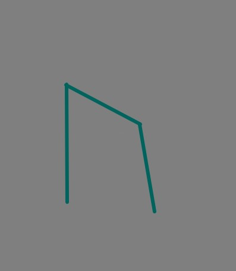

ウル

ウルド神はノルンという神の姉妹の中で長女であり、過去を司る。
これはwyrdに古ノルド語で「～になる」という意味が含まれているからである。
このことから、過去が過ぎ去っていくものであり占いでは「速さ」「変化」を意味するのではないかと考える。
「宿命、運命」という意味はノルンという神(三人の女神)が全体的に司っているものである。
野牛という文字の意味で、当時の牛は力強いものだったため、占いの意味に「力」が込められているのではないかと考えられる。